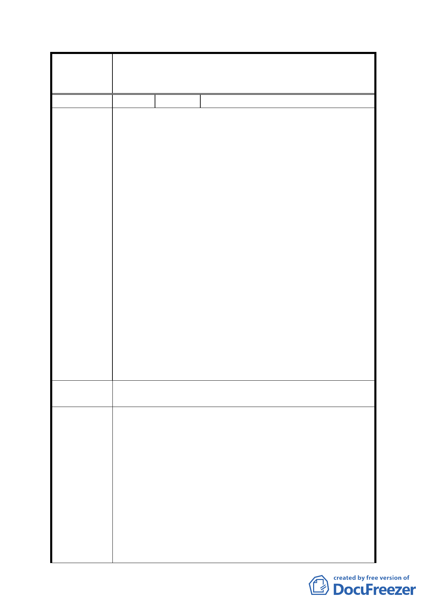

臺北市都市計畫委員會公民或團體所提意見綜理表
變更台北市文山區景美溪左岸(萬壽橋至道南橋間)
案 名 機關用地、公園用地為第三種住宅區、道路用地、
公園用地細部計畫案
編
號1
陳情人 高森、高金良等 12 人
該地號編列之公園用地、機關用地、及道路用地；建議除
『道路用地』仍維持原計畫不變更外，其餘皆依照原始編
定，改回為『第三種住宅區』。
說明：
1. 文山區政大段四小段 211 地號土地（亦即該地『紫藤樓
前之畸零地』），早期即為都市計畫編定 之『住三』用地，
後因配合堤防建設之用，改為抽水站用地；後經建請反
映，始回復『住三』用地。惟於該地號近萬壽橋端，三
角畸零地部分，未依原始編定，回歸為『第三種住宅區』；
而被編定為「公園用地」及「防災避難區」，時令人不解。
陳 情 理 由 2. 是項土地臨接堤防綠地，且堤防外即為高灘休閒區，綠
地片片、綠意盎然；現另行加編小小「公園用地」有無
必要？且為消化用途，另加編所謂及「防災避難區」，消
耗地主市民應有權益，其理由有無特殊目的？令人猜
疑！！
3. 且就編定「公園用地」、「防災避難區」之是項土地形狀、
位置而論，因狹窄細長，建築基地面積不足，根本無法
蓋房子。但就市民地主而言，卻可以出賣「容積率」方
式，避免再次損傷！而今市府如以公權力強行編為『公
共設施用地』，罔顧市民利益，實非民主文明政府應有作
為。
建議辦法
建議將本地號土地，依照原始編定，改回為『第三種住宅
區』。
1. 為兼顧地主及周圍居民權益，建議本案自萬壽橋至 66
巷口仍維持公園用地，公園北側劃設迴車道，以連絡計
畫區 6 公尺寬南北向道路與防汛道路，並於計畫書內規
定於計畫區留設至河濱公園之連通空間與跨堤設施位
專案小組審
置，以及住宅區臨街面退縮建築留設 2 公尺寬人行道，
做為法定空地，其餘則依本案變更計畫內容劃設道路用
查 結 論 地及第三種住宅區，以市地重劃方式開發。
2. 因修正計畫其重劃總平均負擔比率為 51.6％，為兼顧地
主權益，本次補充資料第 6 頁「修正都市計畫圖」緊鄰
公園南側之 6 公尺寬東西向道路用地修正為住宅區，以
降低市地重劃之公共設施負擔比率。
3. 有關土地所有權人陳情停車獎勵、提高容積率、開挖率
-6-